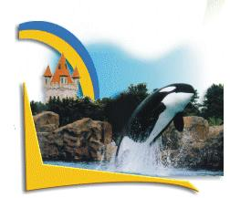

|
Привет, привет!
Эх, все хочу написать "психологическое" письмо. То есть не о событиях, а о жизни, о
людях, о вещах, о наблюдениях. Но пока собираюсь сесть за компьютер, приходят новые
события, потом опять новые. Надо, однако, отправить это письмо и тут же садиться
писать новое, "психологическое", да вот только психологически это как раз-таки и
невозможно :). Посему "психология" пока подождет...
С каких событий начинать, я уж даже и не помню за давностию времени. Похоже, что с
Ниагарского водопада.
Эта поездка была просто восхитительная. У нас тогда еще не было своей машины, и нас
пригласили на водопад Тесленки. Правда, сначала было задумано заехать в Marineland.

Это типа Wonderland-а и Disneyland-а, но только с уклоном не столько в аттракционы,
сколько в представления с морскими животными, такими как касатки, морские львы и
дельфины. Marineland располагается в маленьком (относительно Торонто, например)
городке Niagara Falls, примечательном своим всемирно известным Ниагарским водопадом
и нескончаемым числом entertainment - развлечений. Это туристический городок, посему
здесь очень много отелей, мотелей, ресторанов, необычных музеев, парков, гифт-шопов
(магазинов с подарками) и круглосуточно работающих всяких развлекательных заведений.
Прибытие наше в Marineland совпало с началом представления на воде. В большом
бассейне под руководством специалистов по-очереди выступали морские львы и касатки.
Последние здесь носят название killer whales - киты-убийцы (предполагается, акул),
хотя выглядят они весьма дружелюбно. И с добровольцами они даже целовались. А на
представление с дельфинами мы, к сожалению, опоздали. В самом парке тоже есть
бассейн. Там касатки плавают просто так, без представлений. И если у них появляется
желание, они подплывают поближе к людям, так что последние могут их погладить. Мы
тоже погладили. Кожа у касаток, оказывается, очень гладкая, как будто резиновая.
Затем мы спустились под бассейн, где нам представилась возможность посозерцать на
плавающих под водой китов через огромные стекла. Правда, на других китов. Касатки-то
все больше к людям тянулись, к солнечной поверхности. А в глубинах бассейна плавали
иные животные, по размерам также напоминаюшие китов, но цвета они были абсолютно
белого, а морды имели какие-то притупленные и далеко не эмоциональные. Короче, более
всего они были схожи с белоснежными облаками, медленно плывущими по синему небу.
Затем мы плавно перебазировались в аквариум, где лицезрели разного рода морских
рыбешек. Заметив, что у одного из аквариумов столпилось необычайно много народу, мы
также поддались стадному инстинкту. Оказалось, что в этом аквариуме вместе с рыбами
плавает аквалангист и аккуратненько протирает тряпочкой стеклышки для лучшего
просмотру.
- Papi, who is this? - заинтересованно спросил отца маленький мальчик.
- Son, this is a human-fish, - напустив серьезный вид, ответил папашка, - This is
the most dangerous fish in the world.
Постепенно к human-fish интерес начал угасать, и люди рассредоточились в разных
направлениях. Мы, например, пошли смотреть на медведей. Медведи стояли в бассейне (в
подобную жару, видно, всех к воде тянет), так что видно было только головы, и
вопрошающими взглядами окидывали народ, бросающий им сверху так называемый медвежий
корм - маленькие шарики. Шарики медведи ловили не столько с голодухи, сколько от
безделия. И если шарик падал не рядом с мишкой, а чуть поодаль, бурый ленивец вовсе
не спешил за ним. Один медведь был наиболее прикольным. Съедая очередной шарик, он
тут же поднимал левую лапу вверх, прямо как дети на уроках, привлекая тем самым
всеобщее внимание. Второй мишка пытался не отстать от него, выбрав для притягивания
людских взглядов и, следовательно, шариков иной способ - он просто ударял лапой по
поверхности воды, типа как ложками по столу стучат :).
Много еще интересного мы видели в Marineland-е: и оленей, и аттракционы всякие
посетили, и в гифт-шоп зашли, где я, наконец-то, купила себе кепку и рюмку :).
Причем что на кепке, что на рюмке изображены касатки да дельфины. Прикольно. Правда,
как только я приобрела кепку, солнце сразу спряталось, но это нисколько не испортило
настроения, а даже напротив, я пожалела, что не купила ее раньше :).
...И вот мы медленно приближаемся по шоссе к водопаду. Медленно, потому как
приближаемся далеко не мы одни. Сколько туристов бывает в Niagara Falls в день,
просто уму непостижимо! И вот уже слышен шум, вот уже включены дворники, ибо машина
постепенно покрылась маленькими водяными капельками (это был не дождь, а водяная
пыль от водопада), и вот... сам водопад... Зрелище сие, как говорится, ни в сказке
сказать, ни пером описать! Это такие громады воды, такие громады! Падая и ударяясь,
они превращаются в пену и пар. Со стороны казалось, что мы смотрим на разрез огромной
чаши, образованной полукруглой стеной сплошной воды. На дне чаши кипит вода. А сверху
вырисовывается изящная ручка из солнечной радуги. Радуга действительно, словно
упиралась в края водопада, чтобы не упасть в бурлящую пропасть...
На самом деле, существует как бы два водопада: американский (плоский и относительно
узкий) и канадский (полукруглый и широкий). Причем американцы падающую сторону
своего водопада во всей своей красе не видят. Для этих целей они переходят границу в
виде моста и созерцают оба водопада с нашей, канадской стороны. А отсюда видно оба
водопада просто замечательно. Есть также и другой способ - спуститься поближе к
водопаду и даже потрогать его. Я сначала за недостатком зрения такого способа не
разглядела. Говорю Андрюше, что это за желтые флажки развешаны на том берегу,
ремонтируют что ли чего. Но, внимательней присмотревшись, вдруг замечаю, что эти
флажки движутся. Оказывается, это люди! И все, как один, в желтых одноразовых
плащах, специально выдаваемых при спуске к водопаду. И на канадской стороне
происходит то же самое. Однако, первым делом мы решили облачиться не в желтые плащи,
а в синие. Синие плащи выдаются, когда ты всходишь на палубу большого открытого
катера, возящего людей прямо в середину водопадного полукруга. Ох и кайф же это!
Внутри водопада кажется, будто вокруг тебя одна вода, со всех сторон (именно со всех
сторон, потому как ощущение такое, как будто попал под сильнейший ливень - незря
плащи всем выдают :). А зрелище, представляемое водопадом, настолько завораживает,
что невозможно оторваться, как колдовство. Причем с этого ракурса, снизу, водопад
видится не столько водопадом (поскольку верхушки не видно), сколько огроменных
размеров волной, которая, как в замедленной съемке, надвигается на тебя, словно
безысходность. И ты понимаешь, что вот-вот, в считанные секунды эта глыба навеки
поглотит тебя, но взгляда, тем не менее, отвести не можешь. Ты понимаешь, что это
игра. Не твоя игра, нет, но водопада. Ты ясно осознаешь, что являешься всего лишь
игрушкой в его разверстой пасти, как загипнотизированный кролик в глазах удава, но
почему-то... ты счастлив.
В 9 часов вечера включили иллюминацию, освещающую Ниагарский водопад. Вид, надо
сказать, получается далеко не хуже дневного. Иллюминация представляет собой
несколько мощных прожекторов разных цветов, направленных в различные точки водопада.
И раз в несколько минут все прожектора меняют цвет. Красиво до безумия!
Но, как вы сами догадываетесь, день не резиновый. Так что, по большому счету, кроме
Marineland-а и водопада больше ничего посмотреть толком не удалось. Но нам и Ниагары
хватило! Впечатлений на несколько дней вперед. А уж потом как-нибудь выберемся туда
с Андрюшей сами да на своей машине, да на пару-тройку дней... Кстати, Андрюша
сказал, что это было самое лучшее наше путешествие здесь. И замечательно оно было
еще и тем, что провели мы тот день в точности так, как если бы сами поехали, одни.
Так что большое спасибо Тесленкам, доставившим нам такую радость.
Помимо водопада мы второй раз съездили на Georgian Bay. Это там, где озеро Гурон
(Huron), медвели и индейцы :). На сей раз мы всей толпой (тремя семьями) специально
поехали на конкретное место, дабы полазить по горам, посозерцать окрестности и
пофотографироваться. Поездка была немного странноватой, и в то же время
превосходной. Превосходной, потому что нам в сей приезд удалось-таки достичь
поставленных целей, то бишь покорить все обрывы, выступы и скалы, а странноватой,
потому что преодолевать нам приходилось не только скалы, но и другие препятствия,
которые невидимый и коварный рок усиленно расставлял на нашем пути.
Началось все с того, что мы с Ершовыми долго ждали (еще в городе) на пересечении
двух дорог, где договорились встретиться, семейство Тесленко. Они каким-то образом
умудрились заблудиться и еле нашли дорогу. Потом только тронулись, проехали минут
40, как скрылось солнце, и, похоже, насовсем, при всем при том, что мы планировали
также от души покупаться на Гуроне. Проехав еще минут 40, мы почувствовали, что
погода вообще начала портиться. Но возвращаться было так неохота. Еще через
некоторое время мне сделалось как-то нехорошо. Я только закончила тогда поиски
работы и начала свою трудовую деятельность, посему мои нервные окончания еще не
успели обрасти изоляцией, а по привычке торчали во все стороны, как голые провода.
Так что ни с того ни с сего что-то случилось со мной на нервной почве, так что даже
захотелось мне выйти из машины в чистом поле и там остаться. Но это, слава богу,
прошло, и на место мы все прибыли в достаточно приподнятом настроении, несмотря на
пережитый по дороге дождик. А когда мы отправились исследовать окрестности, даже
показалось солнышко. Да только это был обман психики, потому как вместе с солнышком
показались мухи. Много мух. И все кусучие. Прямо вот обыкновенные мушки, как в
России, но только очень злостные. Облепляют все ноги и руки и сосут кровь, паразиты.
Причем нифига не боятся. Мы и каким-то специальным кремом мазались, и дымом их
пытались отгонять, и ветками, - бесполезно. А после того, как мы со Светой
отважились окунуться в ледяном Гуроне, они заели нас окончательно. Мухи портили всю
обедню. Нет, на самом деле, обедню (если буквально :) нам испортил дождь, но об этом
попозже :).
Несмотря на гадких насекомых, вид на скалы и со скал был просто восхитительным. Мы
сделали кучу пейзажных снимков (вот только все-таки не рассчитали с пленкой - мы
думали, что будет солнечно, и взяли с собой соответствующую пленку, а оказалось
пасмурно, так что фотографии получились не идеальные). Очень красив в том месте лес.
Густые деревья вперемежку со скалами. То есть идешь-идешь по лесу, тут бах, видишь
ущелье, поросшее мхом, или маленькую пещерку, или разлом в земле, как при
землетрясении. Тропинки тоже каменистые. Очень красиво. Медведей мы на сей раз не
боялись, ибо день был, да и количество народу внушало уверенность. Немного народу, но
достаточно, чтобы не быть медведям :). Только нас одних сколько было! Скалолазов...
:)
Собственно лазали мы не по обрывам с утесами (это дело специалистов), а по
небольшим, но заковыристым, пещерообразным камням, находящимся прямо на берегу
озера. Устали, вымазались, но это была приятная усталость. Еще б не мухи. Они,
черти, сопровождали нас до самых машин. Прямо, как облако, несутся за человеком.
Человек быстрее бежит, и они тоже. Надо сказать, мы нигде здесь в Канаде не видели
столько насекомых сразу. Комаров тут почти нет, мух в городе очень редко видно,
бабочек не чаще. И только в том месте и в тот день их была уйма. Наверное, со всей
Канады слетелись. Ведь мы и раньше там были, но мухи нас нисколечко не беспокоили.
Завершив лазание, мы расселись по тачкам и двинулись искать место для того, чтоб
покушать. По пути заскочили в индейский гифт-шоп. Там много асякой разной индейской
белиберды: и венок из цветных перьев (не знаю, как он называется), и тапочки-
макасины, и талисманы, и камешки, и кожаные куртки индейского типа, чего только
нет...
Заметьте, дождя, с тех пор, как мы приехали на Georgian Bay, не было. На радостях мы
нашли соответствующие столики, сдвинули их вместе, достали все свои съестные
припасы, пораскрывали их... И тут такое началось! Такой дождина. У вэна открыли
крышу багажника и все дружно попытались под нее забраться. Каждый держал в руках,
что успел урвать с промокающего насквозь стола. В общем, что смогли, в животы
поскидали и, убрав за собою под проливным дождем свинарник, поехали домой.
Но это было еще не все. По дороге мы заехали в Тим Хортонс за кофейком. Взяв стаканы
с кофе и выйдя на улицу, мы только было собрались двинуться к машине, как вдруг
ударил град! Такой град, что выходить из-под крыши было страшно, - вдруг прибьет.
Стоим себе спокойненько у крылечка, кофеек попиваем, на градинки созерцаем, как
вдруг опять "вдруг"... Вдруг так громыхнуло и так осветило яркой молнией всю
окрестность, что всюду погас свет. Хорошо, мы успели кофе купить. Правда, со страху
чуть не выронили :).
Так, еле-еле, добрались до дому. А на следующий день в новостях передали, что в том
самом месте, где мы наблюдали град, прошел несколькими часами позже небольшой
торнадо и что какую-то женщину ударило молнией. Короче, поиграли мы в прятки с
природой в тот день. Но, слава богу, все живы-здоровы :). Опять же без приключений-
то неинтересно жить.
Какие еще события произошли за столь длительное время? Во-первых, мы рискнули
спросить банк об открытии кредитной линии. "Рискнули" называется потому, что все
запросы банковских клиентов и все отказы им регистрируются в компьютерной сети.
Поэтому если тебя проверяют на платежеспособность и обнаруживают какой-либо отказ, то
это как бы не очень хорошо. А компьютер обойти невозможно. Все решает только он. И
человек (например, банковский работник) по доброте душевной ничем подсобить не
сможет. Но мы все-таки рискнули и... получили добро. Кредитная линия от просто
кредита отличается тем, что даденый кредит ты тратишь, гасишь его и на этом все
заканчивается. А кредитная линия - это вроде постоянного резерва на сколько-нибудь
тысяч баксов. То есть ты можешь потратить какую-то часть его, потом еще какую-то
часть. Каждый месяц при этом ты выплачиваешь банку определенный в договоре процент от
потраченной суммы, восстанавливая, тем самым, свою кредитную линию. И используешь
кредитную линию опять. В общем, она открыта для тебя, пока только там есть хоть
какие-то деньги.
На радостях мы сразу отправили весь оставшийся долг ЦФТ. За ссуду по квартире. А
остаток денег вложили в даун-пэймент при покупке машины.
Да, да... Нам наконец улыбнулось счастие, и мы приобрели машину.
Андрюша сдал на права категории G2 - test driving. И сразу же мы пошли покупать тачку -
Ниссановскую Максиму 2000. Однако, возникли кое-какие проблемы с лизингом. Для
лизинга машины необходимо, чтобы у тебя была кредитная история минимум 2 года. А у
нас она всего 6 месяцев. Мы разве что берем дилеров своим инкомом - то есть доходом
на семью. Но, к сожалению, от дилеров не все зависит. Конечное
слово дает банк, в который они обращаются за кредитом для нас (для нашей машины). И
банк не дал нам кредита. Не особо расстроившись (я так вообще не расстроилась, ибо в
глубине души хотела совсем другую тачку, на которую мы ранее положили глаз - Pontiac
Grand Prix. Это у Андрюши чего-то вдруг возникла шальная идея заполучить вийкл чуть
выше классом. :), так вот, не особо расстроившись, мы отправились в Дженерал Моторс и
без проблем взяли в тот же самый лизинг Гран При, в n+1-й раз убедившись, что все,
что не делается, к лучшему. Ибо сейчас нам она нравится куда больше, чем японская
Максима (мы вообще не сильно любим японские тачки). Ездить на ней одно удовольствие.
Она ведь как бы спортивная. И мощи у ней!!! В общем, кайф. Опять же, с Андрюшиных
слов, она гораздо легче, чем Максима. Мы ведь опробовали Максиму, когда собирались
покупать (кстати, смешно сказать, но сей driving test - был первый Андрюшин опыт
выхода на хай-вэй :). Максима тяжелее и, тем самым, более инерционна: медленнее
раскочегаривается, медленнее останавливается. В то время как Понтиак - парень вне
сравнения шустрее, хоть по величине и мощности нисколько не уступает. Короче, что и
говорить, рады мы до безумия! :)
Еще из событий эпопея с велосипедами осталась неосвещенной...
Веселье началось еще с того дня (или, опять же вечера), когда мы сии велосипеды
купили, то бишь с пятницы. Днем раньше Андрюша озаботился о крепеже великов к машине
и приобрел некую распорку, устанавливаемую к заднице машины и прикрепляемую к оной
разного рода ремнями. Это, - сказал Андрюша, - самая лучшая распор,.. тьфу... то бишь
крепление. Таким образом, выкатив далеко не ранним вечером велики из мола, мы тут же
по-деловому принялись наше суперпуписное крепление инсталлять. Разложили прямо тут
же на стоянке инструкции по сборке, соответствующие инструменты... Короче, как
смогли прицепили, подвесили один велик и задумались, куда же девать второй, то бишь
мой. Мало того, что для второго велосипеда места на крепеже почти не оставалось,
мало того, что расстояние между уже висевшим велосипедом и машиной явно стремилось к
нулю, мой велик ко всему прочему по своей дамской причине оказался без верхней рамы.
И в подвешенном состоянии за нижнюю раму он вот-вот достигал земли. Пришлось нам
обратно разбирать нашу распорку и лихорадочно думать, куда засунуть велосипеды.
Лихорадку навевали прогнозы о приближающейся сильной грозе, а также стреляющее
молниями небо, которое в кои-то веки с теми самыми прогнозами синхронизировалось :).
"Буря, скоро грянет буря..." - приходило на ум. Аналогично недалекими от истины
показались слова: "Рожденный ползать летать не может..." Так уж нам хотелось
поскорее долететь со всем этим добром до гаража и в спокойной обстановке
разобраться. А вот ползти нам еще предстояло... В общем, никаким боком подвесить
велики нам так и не удалось, а гроза, между тем, приближалась... Мое предложение
поехать домой на велосипеде схоронилось под огнеметом Андрюшиных возражений, не
успев родиться. Решение возникло само собой, когда небосвод с треском разнесла
усташающих размеров древовидная молния. Я таких никогда не видела. В России у нас
молнии в основном локальные и жирные. А здесь молнии тонюсенькие, но ужасно
огромные. Видимо, из-за большой влажности они, появляясь в одной точке, со скоростью
света распространяются до самого горизонта. Выглядит это так, как будто на небо
упало огромное раскидистое огненное дерево. Мы лихо открутили у Андрюшиного
велосипеда одно колесо и забили то и другое в салон (как бы жалко нам не было
кожаные сидения :). Потом проделали ту же процедуру с моим двухколесным другом и
стали пихать его в багажник. Однако, попытки закрыть багажник к успеху не привели, и
мы, плюнув, засунули туда же еще и коробку с разобранным креплением. "По коням!" -
крикнул Андрюша, ощутив первые капли дождя. Но тут мы заметили одиноко стоящий возле
машины холодильник, который пришлось вынуть из багажника, дабы внедрить в последний
велосипед. (Это специальный дорожный холодильник, работающий на энергии, получаемой
от движения машины. Мы приобрели его, чтобы возить с собой в дальнюю дорогу
прохладительные напитки и все такое.) Холодильник уж точно не лез ни в какие ворота.
Я вновь скромно выдвинула предположение, что холодильник неплохо бы разместился на
моем штурманском кресле, а я бы и пешочком дотелепала. Но ничего подобного Андрюша
слушать не возжелал и взгромоздил холодильник поверх велосипеда, ранее забитого в
салон. Ужас! И вот потом мы поползли... Ехать быстро не было никакой возможности,
ибо задний вид по причине наваленной в салоне кучи полностью отсутствовал.
Приходилось довольствоваться боковыми зеркалами. Да к тому же еще и багажник открыт.
Короче, намучились мы в тот вечер. Андрюше, правда, острых ощущений не хватило, судя
по тому, что добравшись до дома, он еще долго продолжал лишать покоя и себя, и
велосипеды. И подкручивал он их, и молоточком постукивал, и насосом подкачивал...
Хорошо, хоть меня не трогал.
А вот в воскресенье, когда мы решили наши велосипеды обновить, острые ощущения
получала в основном я. Уехать с велосипедами в какой-либо парк мы не могли, ибо не
было соответствующего крепления. Посему поехали мы сразу на велосипедах... искать
ближайший парк.
Это, конечно, был кошмар, хотя и приятный. :) Дело в том, что я за всю свою жизнь на
велосипеде каталась раз 5. И по сией причине каждый раз забываю, где у велосипеда
что располагается, где тормоз, где переключатель скоростей. Наверняка распознаю
только сидение, педали и руль. Ну еще колеса, хотя последние с водительской точки
зрения меня мало тревожат.
Поначалу меня страшно пугали приближающиеся с разных сторон транспортные средства,
когда приходилось ехать вдоль машинных дорог или пересекать их (впоследствии как-то
попривыкла). Только посетило голову разумное решение перебазироваться на тротуар,
как вдруг ехавший впереди Андрюша обернулся и заорал, чтоб я немедленно убралась
оттудова. И внимательно глядя по
сторонам, я, несчастная, ехала и терпела. Потом сделалось совсем плохо. - Дорога
стала уходить вниз. И мне казалось, что я со скоростью света мчусь в ад. Не выдержав
подобных ощущений, я резко затормозила, чуть было так же резко не вылетев из
седла, и тихонечко пошла пешком, ведя велосипед рядом. Тихонечко, - это,
конечно, сильно сказано, ибо острые педали постоянно царапали мои ноги, а гневный
Андрюша постоянно вопил, что более он не в силах терпеть подобное катание и сию же
секунду он собирается обратно домой. Наконец, он догадался просто спросить, в чем
дело. И я просто ответила, что мне очень страшно лететь с горы, да еще по дороге,
где ездят машины. Потом Андрюша так же просто дал мне понять, что чтобы не было
страшно, люди подтормаживают специально предназначенным для этих целей
тормозом. А я, в свою очередь, совершенно просто ответила, что искренне считала
велосипедное тормозящее устройство исключительно средством для остановки. Мне и в
голову не приходило притормаживать им в пути. Я думала, от этого портятся шины и
прочие велосипедные детали. Однако, советом с радостью воспользовалась. И с той самой
минуты мне очень понравилось ездить с горок. Всегда приятно лететь, когда знаешь,
что полет целиком и полностью тобой контролируется. Гораздо приятнее, чем лететь в
никуда :).
Наконец, мы достигли какого-то парка со специальными велосипедными дорожками. И тут
возникла другая проблема. - Парк оказался слишком холмистым. Нет, с гор ездить я к
тому времени уже научилась и делала это с большим удовольствием. А вот в горы... В
общем, на преодоление какой бы там ни было горы сил моих совершенно не хватало. И
мне приходилось терпеливо тянуть велосипед на возвышенность, дабы потом насладиться
парой-тройкой минут захватывающего счастья. Пока... Пока наш проницательный Андрюша
вновь не заподозрил, что чего-то здесь не так. Подозрения оказались не напрасными.
Оказалось, что я совершенно игнорирую ручку переключения скоростей. И о радость,
оказалось, что если при подъеме менять скорость на низкую, ехать становится
значительно легче :).
Потом мы плавно перенеслись в другой парк, потом еще куда-то, посидели малось у
речки и поехали дальше, скушали мороженое, попили водички, и поехали дальше... Все
дальше и дальше,.. когда вдруг оказалось, что дорога домой пролегает в совершенно
противоположном направлении. Надо сказать, я была уже почти без сил. Ноги в синяках
и
ссадинах, попа болит, ручки в прямом смысле слова как крючки... Тут еще угораздило
меня со всего размаху навернуться с того велосипеда, - поздно заметила бортик на
крутом повороте. Тормозить было поздно, и я решила, что проскочу. Ну,.. я-то
проскочила, а вот велосипед... :) Думала сначала, что руку вывихнула, да вроде как
обошлось. К тому же пешком от того места нам бы пришлось долго телепать. В гору
ехать, несмотря на "волшебные" скорости, я уже не могла просто физически... Короче,
выехали мы к нашему дому довольно с необычной стороны и в 8.30 вечера. Усталые,
грязные, голодные, но счастливые... :)
А с понедельника начался вновь цирк с креплениями. Старое крепление Андрюша поехал
сдал. Взял другое, более серьезное. Но тут ему в каком-то месте сказали, что на нашу
тачку сие неустановимо, и он опять поехал туда же сдавать и второе крепление. Третий
вид крепления (который на крышу) он покупать, на всякий случай, не стал. Видно,
какое-то чувство подсказало ему этого не делать, потому как ровно в этот же день ему
сообщили, что за нефиг делать смогут установить то крепление, которое он только что
сдал. Но в то же место третий раз он уже не поехал. И взял этот крепеж (даже более
навороченный) прямо там, где нам сей крепеж и установили. Закончилась эта катавасия
только во вторник. Так что теперь все в норме! :) И в следующие выходные мы
преспокойненько, как белые люди, ездили в парк на машине, а там уже в свое
удовольствие накатались. Причем по горам, честно оправдывая сущность наших великов.
Они ведь у нас горные.
Вот такие велосипедные приключения нас постигли. Надеемся, до выпада снега еще не раз
покатаемся.
Что еще у нас тут было... Ездили как-то с Андрюшей вечером посреди рабочей недели
смотреть на ночной даун-таун. Впечатляет, однако... Днем даун-таун, конечно, красив,
но ночью... это совсем другое. Раньше я такое видела только в американских фильмах.
Там любят показывать ночной Нью-Йорк, к примеру, и почему-то, как правило, сверху, -
наверное, чтобы небоскребы было лучше видно. Мы созерцали, разумеется, не сверху, а
снизу, из машины, но ассоциации, тем не менее, возникали ни с чем иным, как с
американскими фильмами. Классно! Жаль, что Андрюша мало чего видел, - ему ведь
приходилось за дорогой следить. Башня со стадионом ночью вообще имеют фантастический
вид. Их откуда-то подсвечивают нежно-фиолетовым светом, и они через это кажутся
прозрачными и невесомыми, - одним словом, неземными. Случайно заехали в
университетский городок. Университет здесь, как замок, - выполнен в старинном стиле.
А, может, он и на самом деле такой старый. Но старость его не портит, а напротив,
создает вокруг него ауру таинственности и заслуживающей признания учености. Не
знаем, соответствует ли содержание форме, но существует мнение, что университет этот
очень хорош. Автомобилей на стоянках вокруг универа! - пруд пруди! Не то, что у нас
в былые времена: стоит на площадке 5 машинок, и все знают, чьи они :). Сейчас,
правда, говорят, вокруг Новосибирского университета машин стало гораздо больше. А
еще говорят, что в России тяжелее жить стало. :) Парадокс...
Ну и еще одно событие. Мы, можно сказать, стали теперь настоящими буржуями, потому
как теперь у нас есть свой семейный дохтур :). Недавно я нашла его благодаря усилиям
одного из врачей, которых посещала. Без семейного доктора здесь жить трудно. Ведь
понятия "участковый" врач здесь нет. Соответственно, нет человека, который бы имел у
себя перед глазами полную картину о твоем здоровье. Вместо участковых здесь семейные
доктора. Они наблюдают не только твое здоровье, но и здоровье всей твоей семьи, от
чего общая картина получается более полной. Вот только найти этих докторов трудно.
Мне повезло, потому что я имела счастие пообщаться с одним очень замечательным
дядичкой - chest-специалистом, который оказался настолько добр, что дал мне телефон
своего семейного доктора. Так все и вышло :).
Ну вот, на сегодня, я думаю, достаточно. Сейчас покажу письмо "рецензенту", положу его на
свой богом забытый сайтишко и в скором времени начну писать новое письмо... - о путешествии из Торонто в
Монреаль... :)
Счастливо!
Следующее письмо- Письмо 11
|